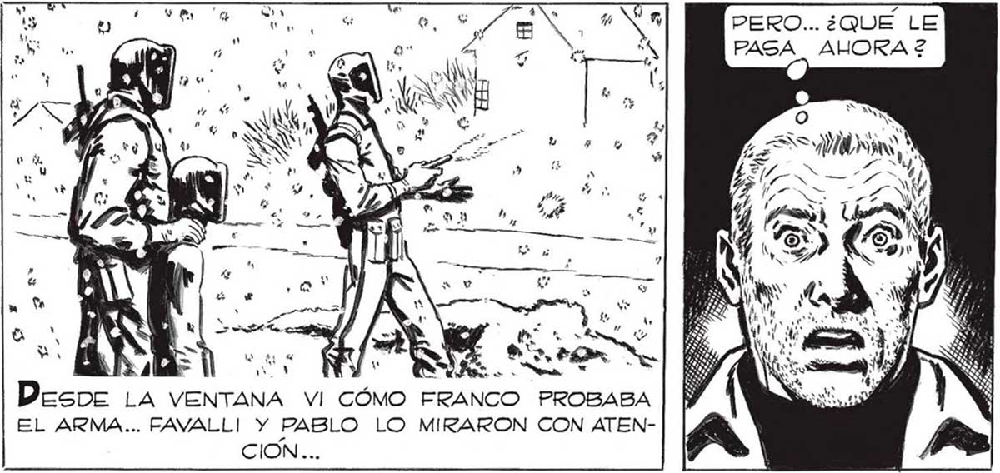
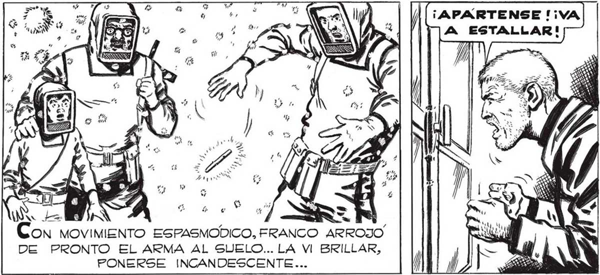
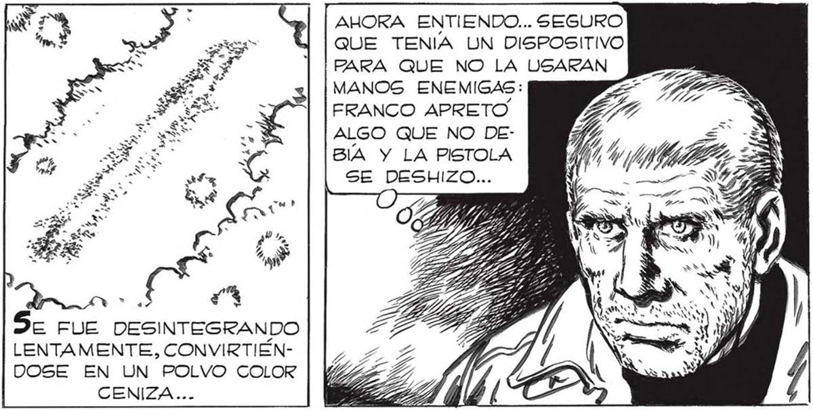

324 YO VOY CON LOS MUCHACHOS, JUAN...TÚ TE QUEDAS EN CASA. TIENES QUE AYUDAR A ELENA, Y A ESTA SEÑORITA, Y, DE PASO, CONVIENE QUE QUEDEG COMO GUARDIAN. TV OL Hosiera PrRerFeRIDO IR YO TAMBIÉN A LA BÚGQUEDA DEL CAMION, PERO FAVALLI TENÍA RAZON, ALGUNO DE NOSOTROS TENIA QUE QUEDARSE EN LA CASA. PERO... ¿QUE LE PASA AHORA 2 C) EL ARMA... FAVALLI Y PABLO LO MIRARON CON ATENCION... ya ESO SS dl É ” Ny A a ES) MIMO lr INS No creo QUE ME OYERAN, PERO LOS TRES PENSARON LO MISMO: ESCAPARON COMO SI Cs 7 UNA GRANADA HUBIERA CAIDO ENTRE ELLOS... Í Pero EL ARMA DEL "MANO” NO ESTALLO... PERO... ¿QUÉ HACE FRANCO? ¿POR QUÉ SE APARTA DE LOS OTROS2 F7 ALLA SALEN LOS TRES... MAS CONTENTOS QUE CHICOS EN DÍA FERIADO... YA ENTIENDO... LE ESTA QUITANDO AL “MANO” DE LA NEVADA EL ARMA CON QUE ANIQUILO' EL “GURBO”...ESTE FRANCO NO SE PIERDE UNA, SIEMPRE ESTA" EN TODAS... Y . z 4 $ y E X Y 3 | m S « ' Y “ . s p y A 411 $5 X em SS : 1 y ” st ú E w $ 4 É > Ñ 7 ¡APARTENSE '¡VA A ESTALLAR! ON MOVIMIENTO ESPASMODICO, FRANCO ARROJO DE PRONTO EL ARMA AL SUELO... LA VI BRILLAR, PONERSE INCANDESCENTE... AHORA ENTIENDO... SEGURO QUE TENIA UN DISPOSITIVO PARA QUE NO LA USARAN MANOS ENEMIGAS: FRANCO APRETO ALGO QUE NO DEBIA Y LA PISTOLA SE DESHIZO... ——— a WN il N de FUE DESINTEGRANDO LENTAMENTE, CONVIRTIÉNDOSE EN UN POLVO COLOR CENIZA...


